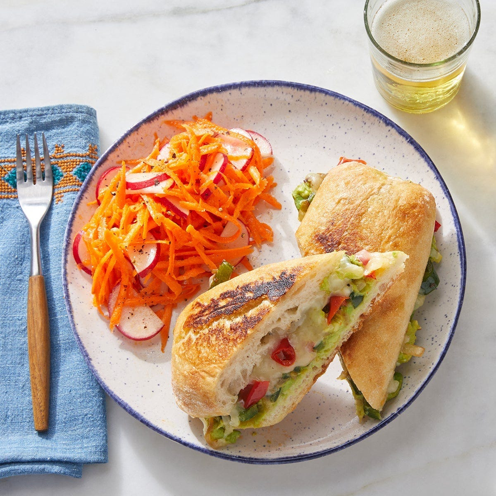

Avocado Poblano Tortas from Blue Apron

Description
These tortas (or Mexican sandwiches) showcase poblano pepper, which is known for its
pleasantly smoky heat—tempered by layers of cooling avocado and melty monterey jack cheese.
A bright side slaw of carrots and radishes marinated with lemon juice adds refreshing balance.
Ingredients
- 2 Small Baguettes
- 1 Avocado
- 6oz Carrots
- 1 Poblano Pepper
- 3oz Radishes
- 1 Yellow Onion
- 1oz Pickled Goathorn Pepper
- 1 Lemon
- 4oz Shredded Monterry Jack Cheese
Steps
- Cook the onion and poblano pepper.
- Peel carrots, halve radishes, halve baguette, pit avocado, chop pickled peppers.
- Make the slaw.
- Assemble the tortas.
- Cook the tortas and serve.
Back to Home